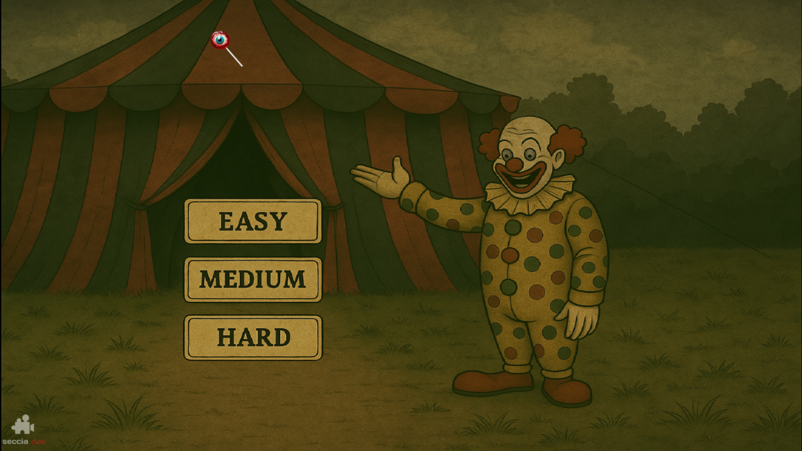
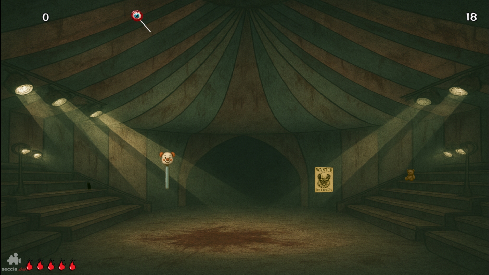
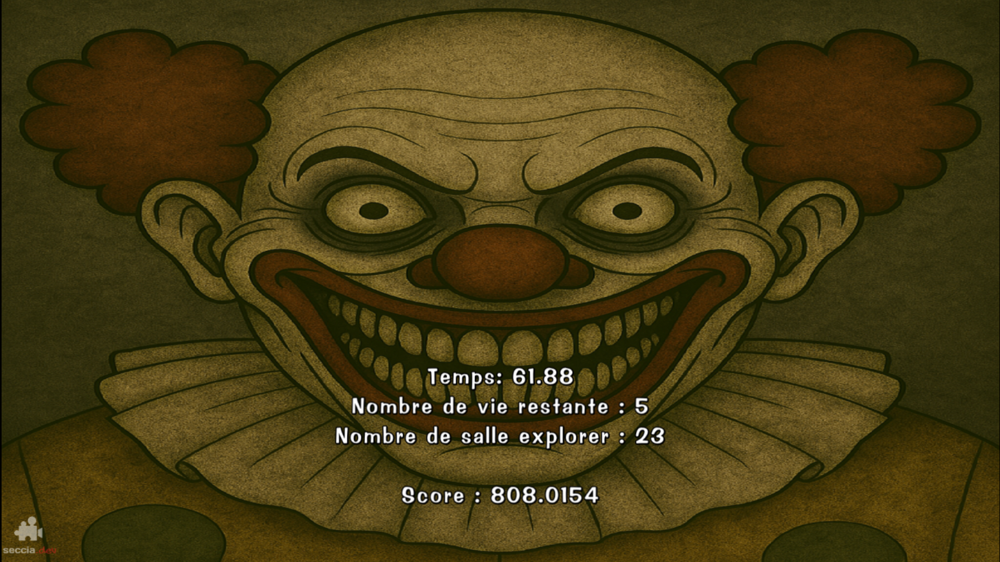

Présentation du projet Scary clown game
Ce jeu a été réaliser lors d'une game jam sur un week-end.
Nous avons utiliser Seccia.dev pour réaliser ce jeu.
Le but du jeu est simple: avancer si il n'y a pas d'anomalie et reculer si il y en a.
Le moteur fonctionne a base de No-Code avec un systeme de scene et de role qui permettent la gestion du jeux.
Voici des images du jeux :
 